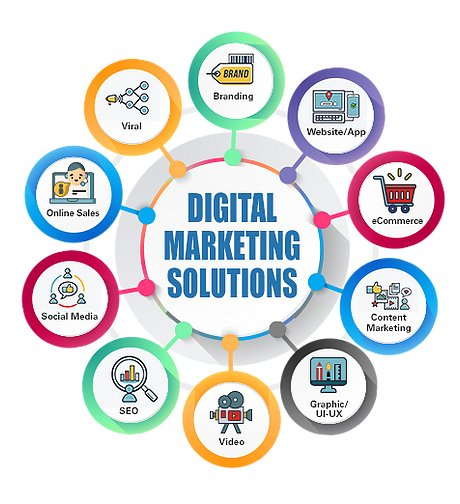
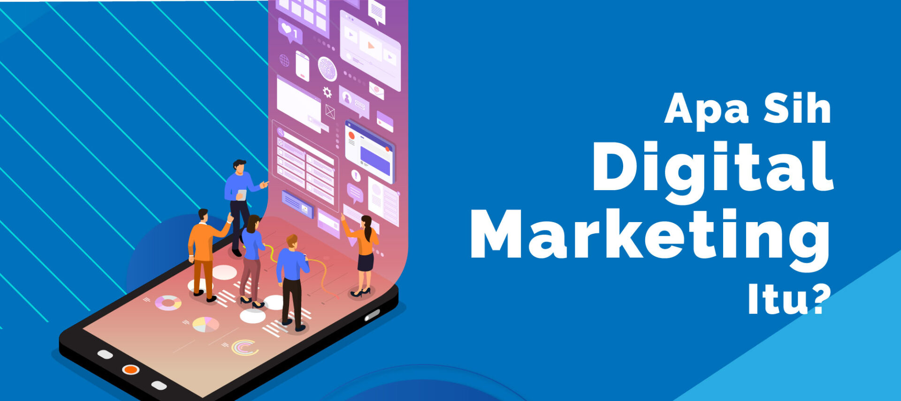

Meningkatkan Keterampilan Digital Marketing
Strategi dan Teknik Terkini
Transformasi Bisnis Anda melalui Pembelajaran Digital Marketing Unggulan

Metode pembelajaran digital marketing adalah pendekatan modern untuk memahami, mengimplementasikan, dan mengoptimalkan strategi pemasaran di era digital. Ini melibatkan penggunaan teknologi dan platform online untuk membantu individu atau organisasi memahami konsep-konsep pemasaran digital, mengembangkan keterampilan praktis, dan mencapai tujuan pemasaran secara efektif dalam lingkungan digital yang terus berubah. Metode ini mencakup berbagai topik, termasuk analisis data digital, optimisasi mesin pencari (SEO), iklan berbayar (PPC), media sosial, email marketing, konten digital, dan banyak lagi. Melalui kombinasi teori, studi kasus, dan latihan praktis, peserta pembelajaran digital marketing akan memperoleh wawasan mendalam tentang bagaimana memanfaatkan platform online dan alat pemasaran untuk mencapai target audiens dengan lebih efektif. Dengan metode pembelajaran digital marketing, peserta juga dapat memahami cara mengukur dan menganalisis kinerja kampanye mereka menggunakan berbagai alat dan metrik analisis. Hal ini memungkinkan mereka untuk mengambil keputusan yang terinformasi dan terus meningkatkan strategi pemasaran mereka. Metode ini dirancang untuk memungkinkan individu atau tim pemasaran untuk beradaptasi dengan perubahan cepat dalam dunia digital, memanfaatkan peluang yang muncul, dan membangun kehadiran online yang kuat untuk mencapai tujuan bisnis mereka.
Sejarah Digital Marketing

Evolusi strategi pemasaran dalam era digital. Dari awal era digital pada 1990-an, dengan internet komersial pertama, hingga era mesin pencari dan perkembangan SEO di awal 2000-an. Kemudian, munculnya media sosial pada akhir 2000-an hingga awal 2010-an membuka peluang baru untuk promosi merek dan interaksi dengan audiens. Peralihan ke perangkat mobile pada awal 2010-an mengubah cara akses internet, memaksa pemasar untuk memprioritaskan pengalaman pengguna di platform mobile. Perkembangan konten pada pertengahan hingga akhir 2010-an menitikberatkan pada upaya membangun otoritas dan menarik perhatian di industri tertentu. Munculnya pengiklanan berbayar dan alat analitik canggih sejak pertengahan 2010-an hingga kini memungkinkan pemasar untuk mengarahkan iklan dengan presisi tinggi dan menganalisis kinerja kampanye secara mendalam. Kini, pemasaran digital fokus pada personalisasi konten dan pengalaman pengguna dengan bantuan kecerdasan buatan (AI), serta membangun koneksi emosional dengan audiens melalui kisah merek dan pengalaman pengguna yang menarik. Pandemi COVID-19 sejak tahun 2020 menyebabkan lonjakan aktivitas online, mempercepat adopsi strategi digital marketing terutama dalam e-commerce, video konferensi, dan konten digital. Dengan demikian, sejarah digital marketing mencerminkan bagaimana teknologi dan perilaku konsumen terus berkembang, dan penting bagi pemasar untuk beradaptasi demi tetap efektif dalam mencapai audiens di era digital yang terus berubah.
Untuk meningkatkan keterampilan digital marketing dan mengikuti strategi serta teknik terkini, berikut adalah beberapa langkah yang dapat Anda lakukan:
1. Terus Belajar dan Mengikuti perkembangan Terbaru
2.Ambil Kursus dan Pelatihan Digital Marketing
3.Praktikkan dengan Proyek Pribadi atau Proyek Kecil
4. Kerja Sampingan atau Magang di Bidang Digital Marketing
5. Bergabung dengan Komunitas Digital Marketing
6. Mengikuti Webinar dan Konferensi Digital Marketing
7. Praktik A/B Testing dan Analisis Data
8. Bergabung dengan Program Sertifikasi Digital Marketing
9. Mengikuti Materi Edukasi Online
10. Jalin Jaringan dan Keterlibatan Sosial
Topik Pembahasan Digital Marketing
| No. |
Topik |
Pembahasan |
| 1. |
Pengantar Digital Marketing |
- Definisi dan evolusi pemasaran digital.
-Perbandingan dengan pemasaran tradisional. |
| 2. |
Strategi dan Perencanaan Pemasaran Digital |
- Membuat rencana pemasaran digital yang efektif.
- Menetapkan tujuan dan KPI (Key Performance Indicators). |
| 3. |
Search Engine Optimization (SEO) |
- Prinsip dasar dan teknik untuk meningkatkan peringkat di hasil mesin pencari.
- Penggunaan kata kunci, optimisasi konten, dan backlinking. |
| 4. |
Pay-Per-Click Advertising (PPC) |
- Penggunaan iklan berbayar untuk memaksimalkan visibilitas online.
- Membuat kampanye iklan efektif dan mengelola anggaran iklan. |
| 5. |
Social Media Marketing |
- Strategi pemasaran melalui platform media sosial seperti Facebook, Instagram, Twitter, dan LinkedIn.
- Membuat dan mengelola konten yang menarik. |
| 6. |
Content Marketing |
- Membuat dan mendistribusikan konten yang relevan dan berharga untuk menarik audiens.
- Pemilihan jenis konten yang tepat, seperti blog, video, infografik, dan lainnya. |
| 7. |
Email Marketing |
- Mengoptimalkan strategi email marketing untuk berkomunikasi dengan pelanggan atau prospek.
- Segmentasi pengiriman email, desain, dan analisis hasil kampanye. |
| 8. |
Pemasaran Afiliasi |
Membangun dan mengelola program afiliasi untuk memperluas jangkauan merek.
|
| 9. |
Analisis dan Pengukuran Kinerja |
- Menggunakan alat analitik untuk memantau dan mengukur hasil kampanye digital.
- Interpretasi data dan mengambil tindakan berdasarkan analisis. |
| 10. |
Pemasaran Mobile |
Meningkatkan kehadiran di platform mobile dan memastikan situs web responsif.
|
Sumber rujukan, klik di sini
Nama : Nurussyifa Utami
NIM : 11210251000155